My3dtiles 0.8
版本下载
稳定版
0.8.15.20240813
最新版
最新版本请看这里： My3dtiles 0.9(研发中...)
往期版本
0.8.15.20240807(beta)
注意： My3dtiles的0.8.15.20240807版本微软的Windows安全中心会误报为病毒。 此版本之前是不会误报的，但是当升级到2024年8月13日的病毒库后，会误报为病毒。 虽无病毒，但是避免使用的不便，您可以替换为0.8.15.20240813(beta)版本，此版本测试不会误报！
0.8.13.20240807(beta)
0.8.11.20240805
0.8.10.20240801(beta)
0.8.9.20240731(beta)
0.8.8.20240724(beta)
0.8.7.20240719(beta)
0.8.5.20240718(beta)
0.8.4.20240716(beta)
修改：
- 查看中增加打开控制台命令
- 状态栏修改
- 场景结构树整体关闭
- 指定区域等值线和等值面功能
0.8.3.20240713(beta)
重点修改：
- 场景结构树功能改进
- 场景树支持海量节点！(5w以上)
- 场景结构树不再使用vue组件，可以自由使用！
- 支持快捷键复制剪切粘贴(Ctrl+C/V/X)
- 支持拖拽，鼠标拖拽节点，直接移动位置
- 复制节点即复制json数据到剪切板
- delete键删除节点，且不影响其他输入框
- 类文件夹操作：shift连续多选，ctrl单点多选
- 多场景树复制，目前还无应用场景
- 内置节点移动到场景树，这样更直观
- 天地图影像使用出现问题，默认使用星图的影像
- 修复谷歌地形漏缝问题(gh)
0.8.1.20240711(beta)
注意：此版本谷歌地形仍存在漏缝问题
0.8.0.20240708(beta)
功能特色
- [ ] 场景树节点中的右键菜单中增加合并成折线集合、OD线集合等命令 20240731
- [ ] 命令面板中增加雨雪后处理特效 20240731
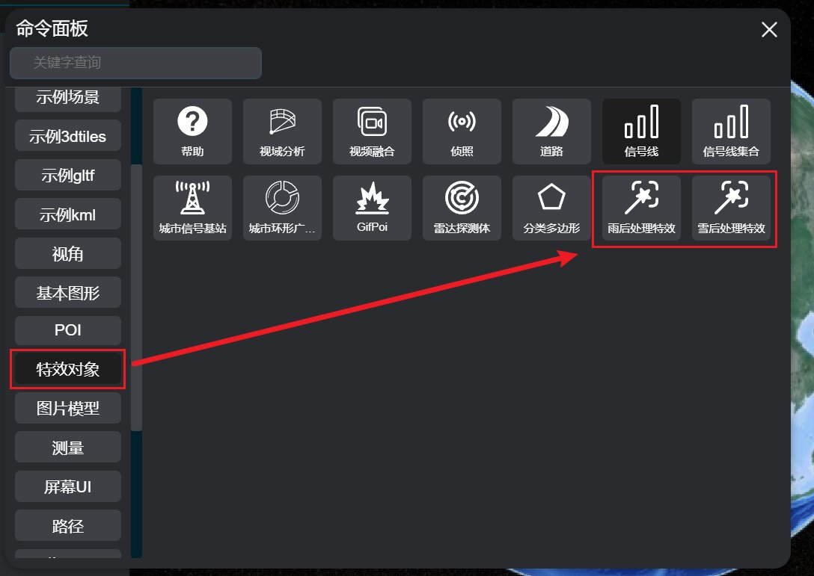
- [ ] 命令面板中增加外部js库加载，自定义脚本等命令 20240731
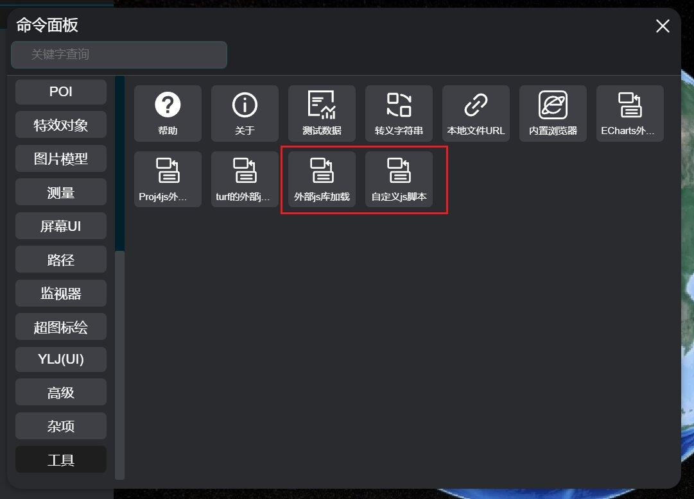
- [ ] 命令面板中增加曲线 20240731
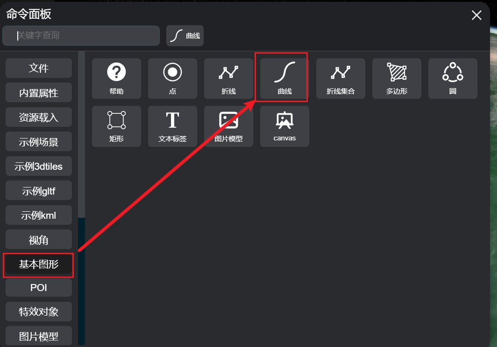
- [ ] 内置节点移动到一个独立的场景树窗口，避免和用户场景树发生冲突 20240731
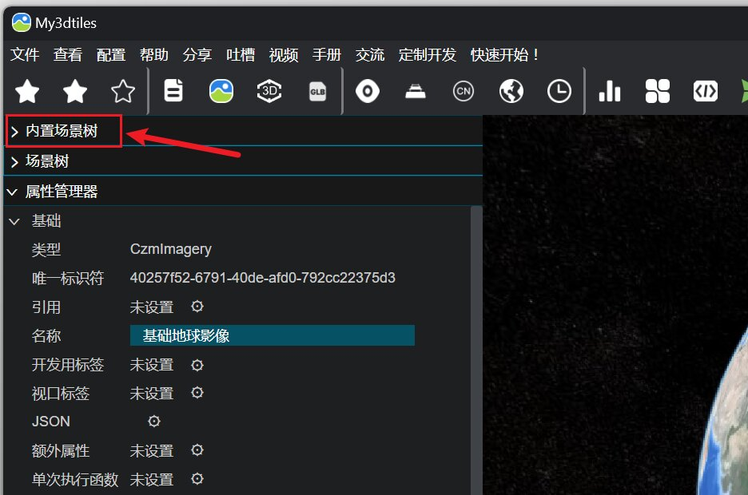
- [ ] 增加sceneTree.selectSingleTreeItemWithSceneObject(sceneObject)函数，用来指定场景对象选中节点 0.8.8 20240724
- [ ] 新增地球自转和环球云图特效 0.8.5 20240718下载 0.8.5.m3tojson↗
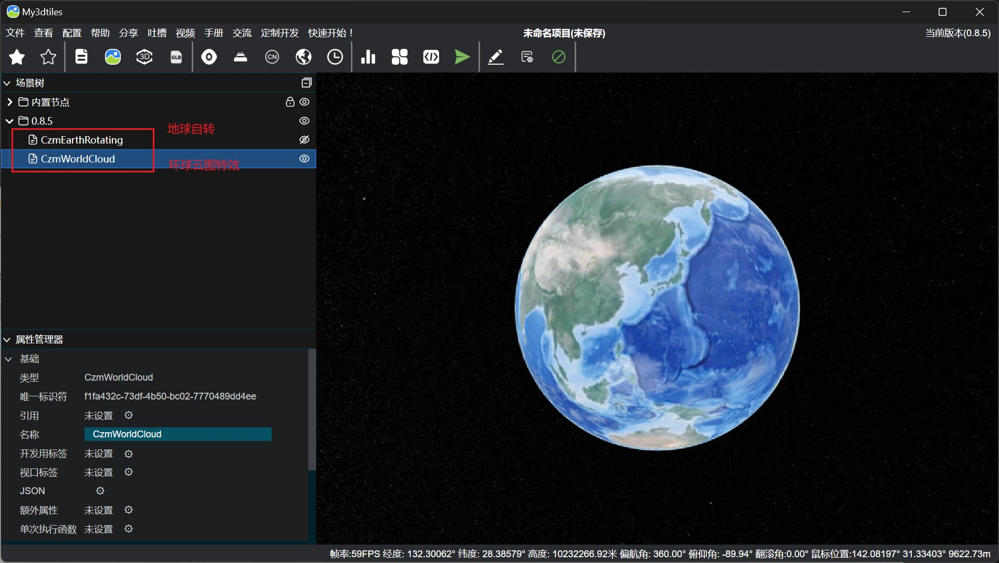
- [ ] 查看中增加打开控制台的命令，原先状态栏中的日志信息，需要在控制台中查看。20240716 0.8.4版本
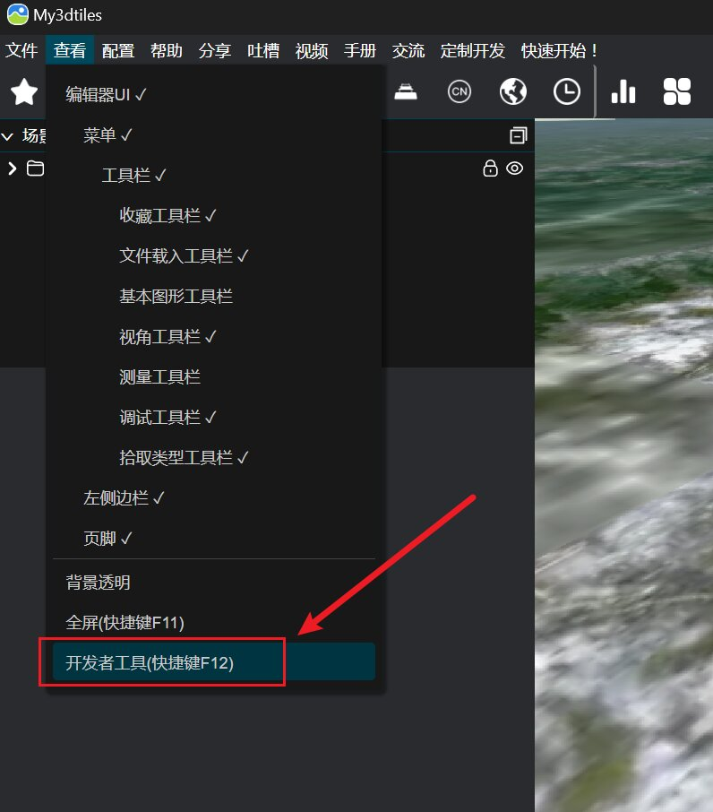
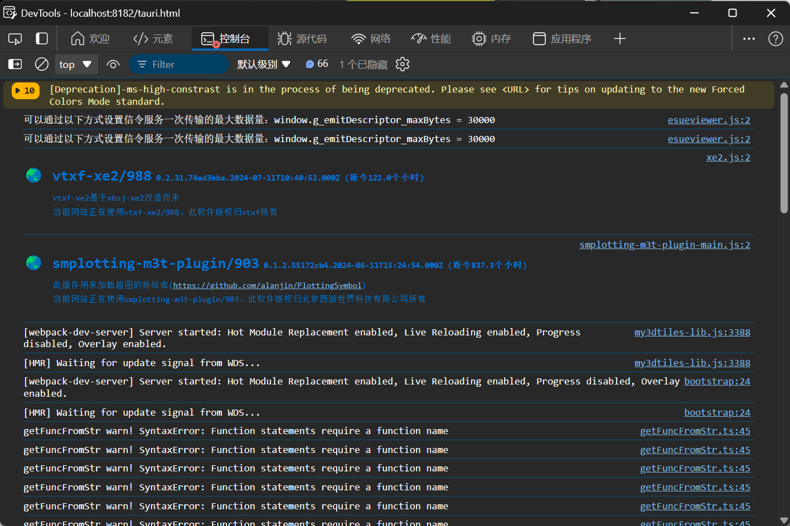
- [ ] 状态栏中的信息更改为实时帧率、相机位置信息、光标位置信息等 20240716 0.8.4版本
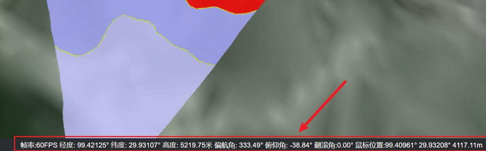
- [ ] 增加指定区域等值线和等值面的计算 20240716 0.8.4版本
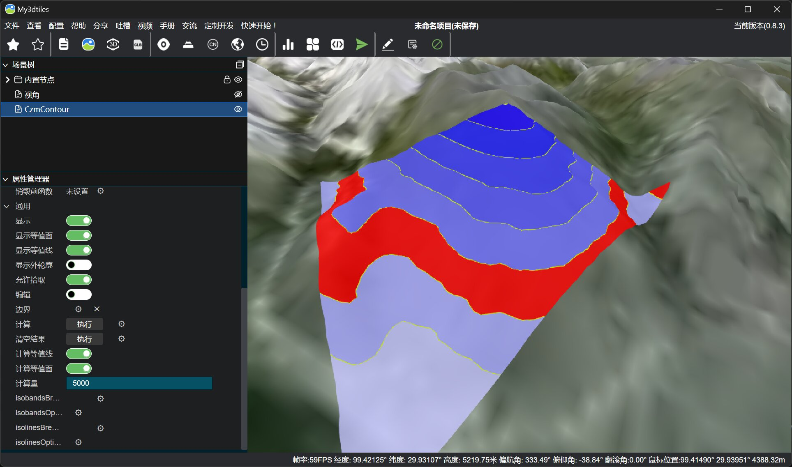
- [ ] 点选3dtiles数据，将自动和3dtiles的调试信息联动 20240713 0.8.3版本
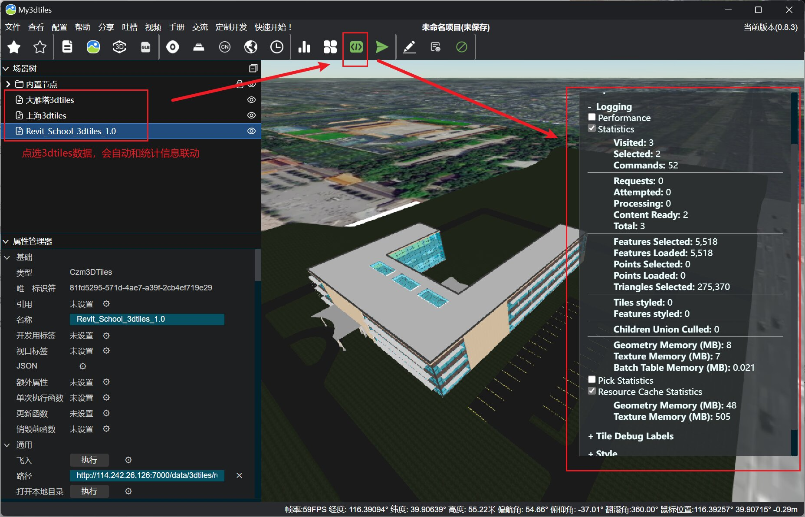
大文件已外迁网盘：演示视频20240715-182130-功能特色演示2.mp4体积超过 3MB，未随文档入库，请到百度网盘「My3dtiles资料附件」条目取回。 - [ ] 3dtiles位置修改后保存到本地 20240711大文件已外迁网盘：演示视频
20240715-000000-功能特色3dtiles加载.mp4体积超过 3MB，未随文档入库，请到百度网盘「My3dtiles资料附件」条目取回。 - [ ] 默认使用新图的影像服务 20240711
- [ ] 粘贴自动解析并加载 20240711大文件已外迁网盘：演示视频
20240715-000000-功能特色演示.mp4体积超过 3MB，未随文档入库，请到百度网盘「My3dtiles资料附件」条目取回。 - [ ] 文件夹拖拽加载 20240711大文件已外迁网盘：演示视频
20240715-000000-粘贴自动解析加载3dtiles.mp4体积超过 3MB，未随文档入库，请到百度网盘「My3dtiles资料附件」条目取回。 - [ ] 内置场景对象也放到场景树中来，场景树节点需要增加只读属性，确保某些节点不被删掉。
- [ ] 场景树改造 去掉Vue 20240705
拾取选中功能失效，需要补充上 20240705 场景树快捷键 del等要支持，然后复制、剪切、粘贴等要支持！
- [ ] ym：这个位置数组能否加个统一高度，设置一个统一Z值 20240705
已增加统一高度设置，方便参见这里： 折线曲线设置统一高度20240731
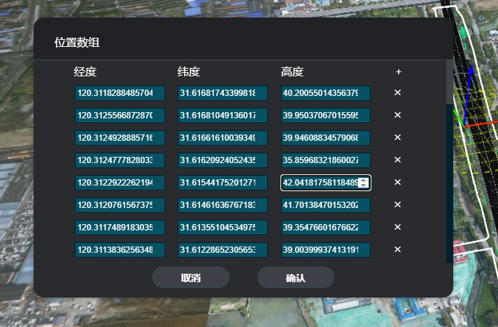
- [ ] 放到命令面板的功能：雨雪特效、坡度坡向、通视分析、脚本加载 等等 20240704
- [ ] 从视角集合直接创建路径 20240704
以后处理此问题 20240731
- [ ] 统计信息考虑如何使用更简单 20240703
以后处理此问题 20240731
- 新增地形剖切线功能，两种模式：折线模式、单点加方向距离模式 20240621
- 命令行和url参数都增加了debugger和d参数，方便程序在启动时可以进入调试状态 20240622
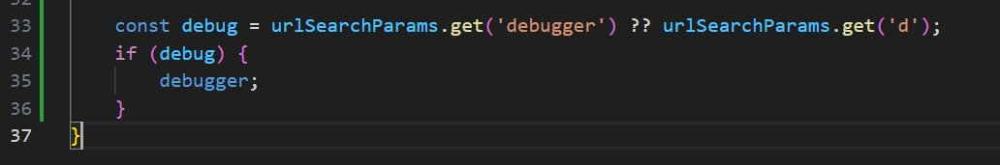
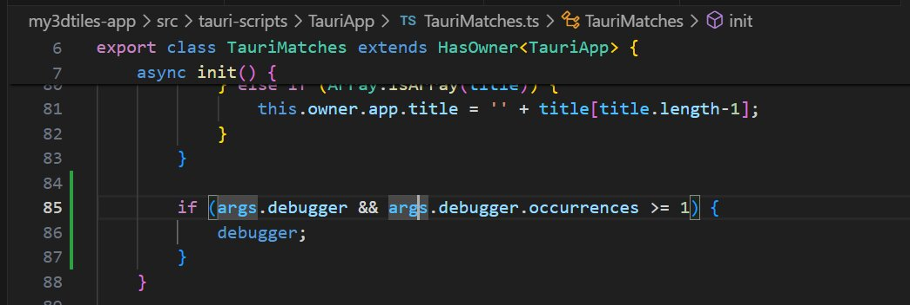
问题修复
- [ ] 屏幕UI、面板目前存在问题，有待调整 20240731
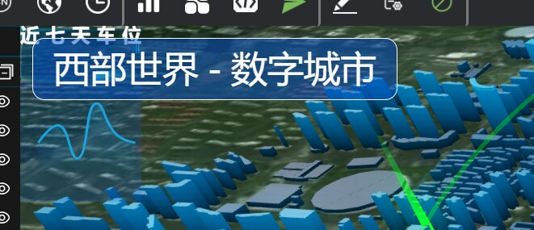
- [ ] 修复CzmModelPrimitive场景对象设置视距范围以后，在视距范围之外创建以后，即使视点移动到视距内依然不可见的问题。20240724 0.8.8
- [ ] ym：发现个bug，ctrl+s保存，会和键盘漫游s同时触发 20240712 修复20240730
- [ ] ym：earthsdk1的云层效果和环绕地球功能 20240712
- [ ] ym：skybox设置不管用 20240712
测试设置管用 20240731
- [ ] 转换cesium代码加载不了3dtiles数据？ 问题已解决20240712
- [ ] 播放器面板不能自动缩放以后再解决 20240731
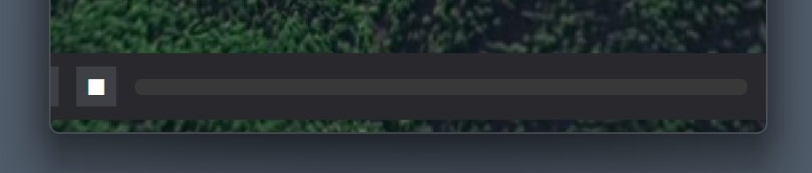
- [ ] 脚本加载 的UI会报错
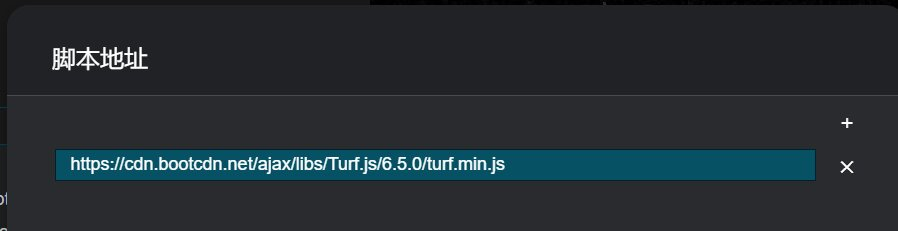
脚本地址
https://cdn.bootcdn.net/ajax/libs/Turf.js/6.5.0/turf.min.js
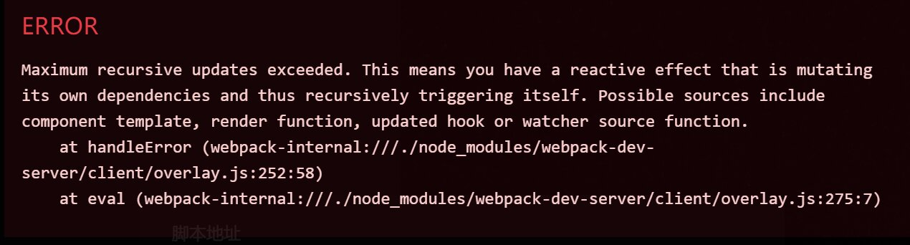
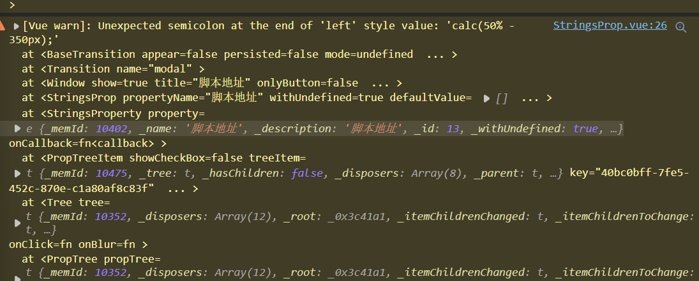
- [ ] 第一人称漫游增加上下移动操作
需要设置内置视口属性中的如下配置。MoveUp和MoveDown表示上下移动。20240703
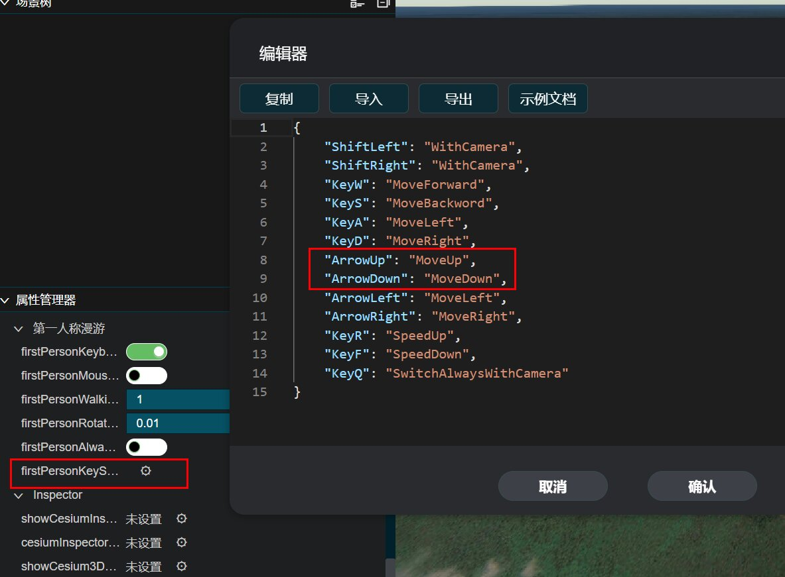
- [ ] createSceneObjectFromJsonOnTree不能设置场景对象的名字 20240627
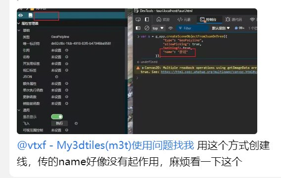
- [ ] 需要增加场景脚本、脚本加载等场景对象 20240622
- [ ] 直接双击打开场景文件(m3tjson)，即使有地形也不起作用 20240622
出现此问题的原因是程序初始化时会自动获取最新版的cesium的ion的token，但是需要一个过程，一旦还未获取到token，就突然开始加载地形，就会出现地形未使用该token而导致错误的情况。目前会监测最新token的变动情况，一旦变动会重建地形，从而确保地形加载没问题。20240625
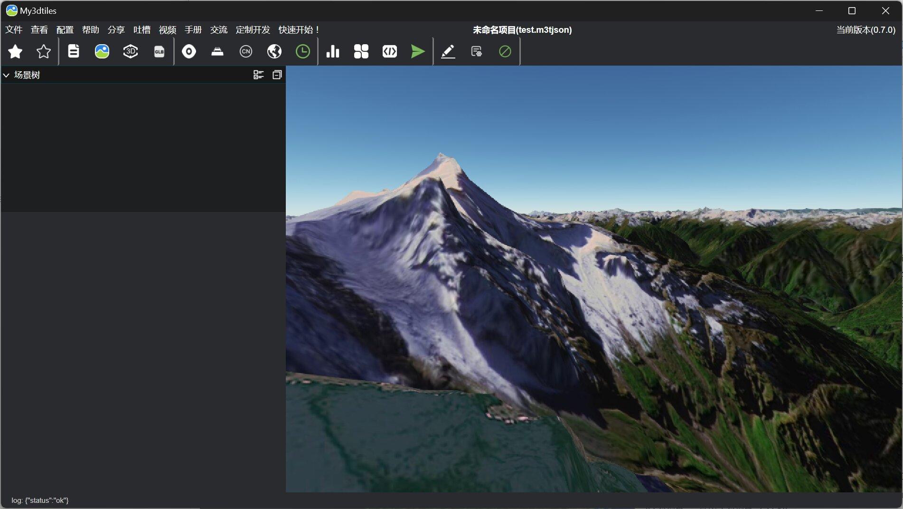
- [ ] 修复谷歌地形加载后黑边问题(不包括顶层瓦片) 20240621修复前
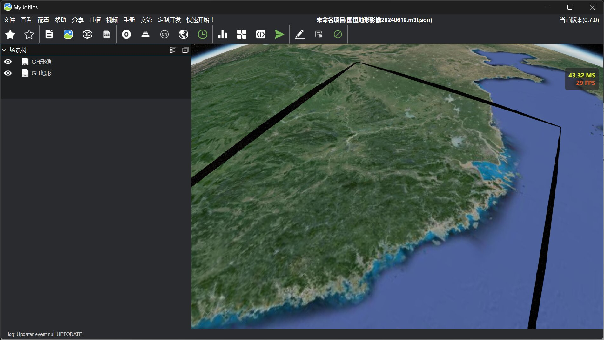
修复后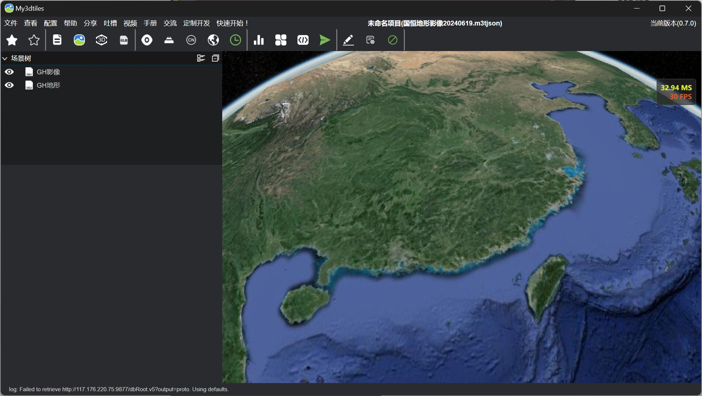
- [ ] GeoCanvasPoi的图标的clickFuncStr，加载时会自动执行。
此问题已修复20240618，需要更新vtxf-xe2
- [ ] 场景树的div高度太小，应该适当调大一点。
已改好 20240619
- [ ] EChartsDiv中borderRadius属性设置不对 20240625
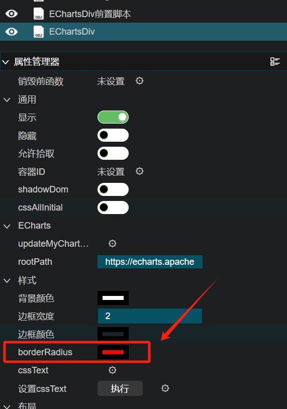